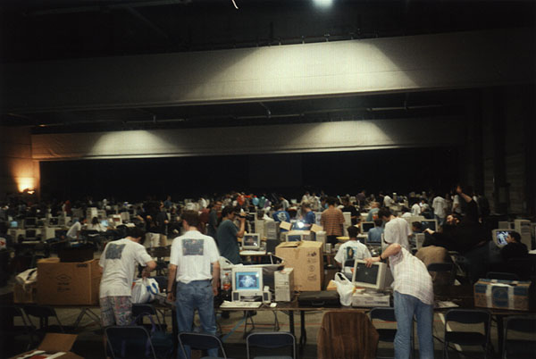

The last edition of the Wired took place at Wasme in Belgium as usually.
This year, there were about 700 people, thats 150 more then in 96, but there's still a lot of space left,
the gymnasium is quite big. Among new things: the net connection, but, with 30 other computers on the same
BNC line, the ping time of 8 second wasn't really accepted by all irc servers. On the other hand, the local
ftp server worked perfectly, so we could download all the productions.
The last year record of the 1.5 L CocaCola drinking competition held by Bladerunner / OS Centolos (42 seconds in
1996) has not been beeten, Asie Fou won the compo with a drinking time of 67 secondes. He won 2 cans of Coke
and left a nice flake of Coke nearby the main screen. There were also quite many girls, which is more and more
common in parties, and even better, they seem to spend some good time and not get bothered.
The PC productions are available for DL from France until they are uploaded on Hornet. Full Results here.

[ >NEWS /
>PEOPLE /
>PARTIES /
>MISC /
>LINKS /
>FAQ /
>CREDITS ]